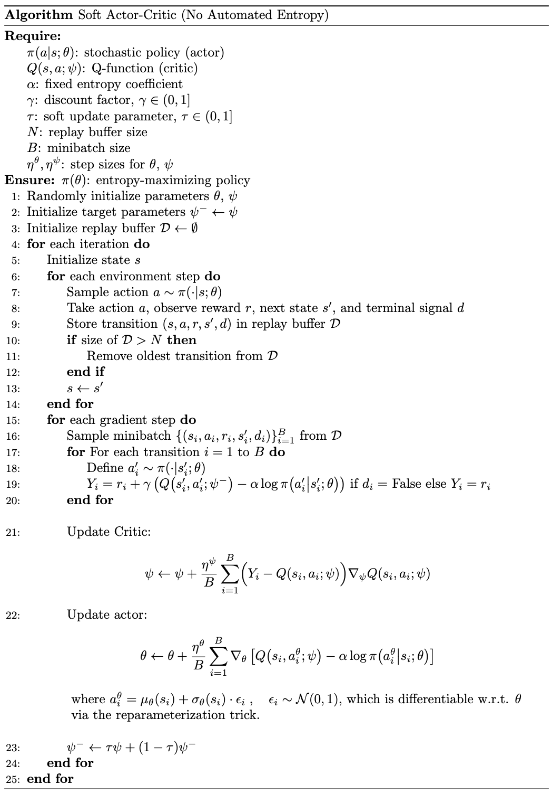
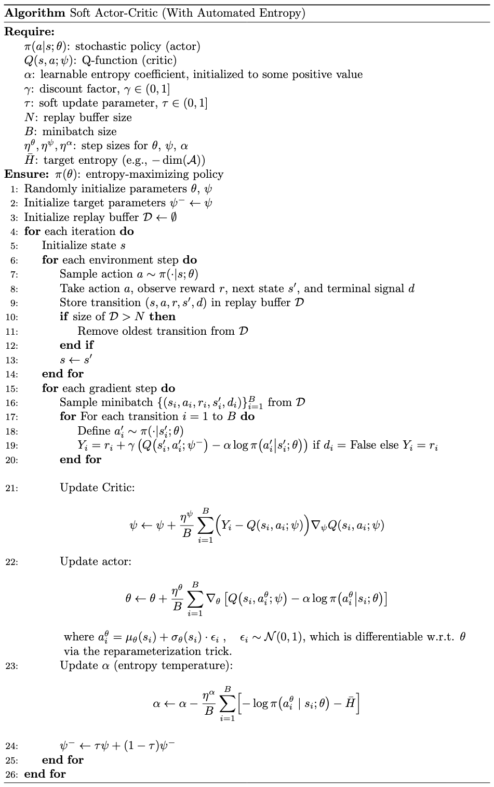

Soft Actor-Critic (SAC)
Revised February 6, 2025
The Policy Gradients and Reparameterization Trick notes are optional but recommended background reading.
While deep deterministic policy gradient (DDPG) mitigates the sample inefficiency inherent in on-policy RL, the interaction between its deterministic actor and Q-function often makes the algorithm challenging to stabilize and sensitive to hyperparameter tuning. Soft Actor-Critic (SAC) addresses these issues by combining off-policy training and a stochastic actor, yielding a more stable and scalable alternative to DDPG.
SAC learns a stochastic policy that maximizes both the expected return and entropy, a measure of the policy's randomness. Entropy captures the average “information”, “surprise”, or “uncertainty” in the possible outcomes of a random variable:
\[ \begin{equation}\label{eq:entropy} \mathcal{H}(P) = \mathbb{E}_{x \sim P} [-\log P(x)] \;, \end{equation} \]
where \(x\) is a random variable governed by the probability mass or density function \(P\).
The maximum entropy objective is defined as:
\[ \begin{equation}\label{eq:sac-objective} \pi^* = \arg \max_\pi \sum_{t=0}^\infty \mathbb{E}_{(s_t, a_t) \sim \rho_{\pi_\theta}} \left[ \gamma^t \left( R(s_t, a_t) + \alpha \mathcal{H} \left( \pi(\cdot \mid s_t) \right) \right) \right] \;, \end{equation} \]
where \(\rho_{\pi_\theta}\) is the distribution of state-action pairs induced by the policy \(\pi_\theta\), and \(\alpha\) is a temperature parameter that controls the trade-off between maximizing reward and encouraging higher entropy.
This objective offers two notable advantages. First, the temperature parameter \(\alpha\) governs the balance between reward maximization and entropy, directly influencing the exploration-exploitation trade-off. By explicitly including entropy in Equation \(\eqref{eq:sac-objective}\), the policy is encouraged to explore more diverse actions, accelerating learning and reducing the risk of premature convergence to a local optimum. Meanwhile, the reward-maximizing component ensures that clearly suboptimal behaviors are eliminated. Second, maximum entropy policies naturally capture multiple near-optimal strategies. When multiple actions yield similar returns, the policy distributes probability mass across those actions, enabling diverse and adaptable decision-making.
Soft Policy Iteration
SAC employs the generalized policy iteration (GPI) framework to approximate an optimal policy. The policy evaluation step estimates the soft Q-function through the iterative application of a modified Bellman operator:
\[ \begin{equation*} \mathcal{T}_\pi \left( Q(s_t, a_t) \right) = R(s_t, a_t) + \gamma \mathbb{E}_{s_{t+1} \sim P} \left[ V(s_{t+1}) \right] \;, \end{equation*} \]
where \(P\) is the state transition probability function.
This operator is referred to as modified because \(V\) is the soft state value function, defined as:
\[ \begin{align} V_\pi(s_t) &= \mathbb{E}_{s_t \sim P, a_t \sim \pi} \left[ \sum_{k=0}^\infty \gamma^k \left( R(s_t,a_t) + \alpha \mathcal{H} \left( \pi(\cdot \mid s_t) \right) \right) \mid s_0 = s \right] \label{eq:soft-value-function} \\ &= \mathbb{E}_{a_t \sim \pi} \left[ Q_\pi(s_t, a_t) + \alpha \mathcal{H} \left( \pi(a_t \mid s_t) \right) \right] \nonumber \\ &= \mathbb{E}_{a_t \sim \pi} \left[ Q_\pi(s_t, a_t) - \alpha \log \pi(a_t \mid s_t) \right] && \text{by Equation } \eqref{eq:entropy} \;. \label{eq:state-value-entropy} \end{align} \]
The soft action-value function (or soft Q-function) can similarly be defined by including an entropy bonus for every timestep except the first (while the exclusion of the entropy bonus at the first timestep is common, it is not strictly required; some implementations may include this term starting at \(t=0\)):
\[ \begin{align} Q_\pi(s_t, a_t) &= \mathbb{E} \left[ \sum_{k=0}^\infty \gamma^k R(s_{t+k}, a_{t+k}) + \alpha \sum_{k=1}^\infty \gamma^k \mathcal{H} \left( \pi(\cdot \mid s_{t+k}) \right) \Bigg| s_t, a_t \right] \nonumber \\ &= \mathbb{E}_{s_{t+1} \sim P} \left[ R(s_t,a_t) + \gamma V_\pi(s_{t+1}) \right] && \text{by Equation } \eqref{eq:soft-value-function} \nonumber \\ &= \mathbb{E}_{s_{t+1} \sim P, a_{t+1} \sim \pi} \left[ R(s_t,a_t) + \gamma \left( Q_\pi(s_{t+1}, a_{t+1}) - \alpha \log \pi(a_{t+1} \mid s_{t+1}) \right) \right] && \text{by Equation } \eqref{eq:state-value-entropy} \;. \label{eq:soft-Q} \end{align} \]
The policy improvement step updates the policy toward the exponential of the soft Q-function. To maintain computational tractability — meaning the ability to evaluate and optimize the policy efficiently — the improved policy is constrained to a subset \(\Pi\) of parameterized distributions (e.g., Gaussians) via projection. Among possible projections, Kullback-Leibler (KL) divergence is appealing as it offers a well-defined optimization objective with favorable computational properties that often yield a closed-form or efficient solution.
Formally, the policy improvement step is given by:
\[ \begin{equation}\label{eq:sac-PI} \pi_\text{new} = \arg \min_{\pi’ \in \Pi} D_{KL} \left( \pi’(\cdot \mid s_t) \Bigg|\Bigg| \frac{\exp \left(\frac{1}{\alpha} Q_{\pi_\text{old}}(s_t, \cdot) \right)}{Z_{\pi_\text{old}}(s_t)} \right) \;, \end{equation} \]
where \(Z_{\pi_\text{old}}(s_t)\) is the partition function, a normalizing constant ensuring that the exponential distribution integrates to 1 over all possible actions:
\[ \begin{equation*} Z_{\pi_\text{old}}(s_t) = \int \exp \left(\frac{1}{\alpha} Q_{\pi_\text{old}}(s_t, a) \right) \, da \;. \end{equation*} \]
While computing the partition function is generally intractable, it does not affect the gradient with respect to the new policy during optimization and can thus be omitted in practice.
Intuitively, we seek the policy \(\pi'\) that closely approximates the distribution obtained by normalizing the exponentiated \(Q\)-function (note that exponentiating the Q-function magnifies the differences between Q-values, ensuring actions with higher Q-values receive higher probabilities while still assigning non-zero probabilities to other actions). This update guarantees that \(Q_{\pi_\text{new}}(s_t, a_t) \geq Q_{\pi_\text{old}}(s_t, a_t) \; \forall (s_t, a_t) \in \mathcal{S} \times \mathcal{A}\). For a formal proof, refer to Appendix B.2 in the original paper.
KL Divergence as a Projection
KL divergence is not a true projection in the geometric sense. Instead, it is the optimization criterion for information projection, which maps a probability distribution onto a constrained set of distributions, analogous to geometric projection onto a subspace. Intuitively, treating KL divergence as a measure of dissimilarity, the information projection of some target distribution \(q\) onto \(\Pi\) is the distribution \(\pi_\text{new} \in \Pi\) that minimizes KL divergence from \(q\). Formally, the information projection \(\pi_\text{new}\) is defined as:
\[ \begin{align*} \pi_\text{new} = \arg \min_{\pi’ \in \Pi} D_{KL} (\pi’ || q) && \text{cf. Equation } \eqref{eq:sac-PI} \;. \end{align*} \]
Soft Actor-Critic (SAC)
As with any GPI-based algorithm, Soft Policy Iteration alternates between policy evaluation and policy improvement, iteratively refining the policy until convergence to the optimal policy within \(\Pi\). However, fully evaluating and improving the policy until convergence at each iteration is computationally prohibitive. Moreover, this approach is only feasible in tabular settings. Extending it to complex, continuous domains requires approximating the Q-function.
Soft Actor-Critic (SAC) approximates soft policy iteration using a parameterized soft Q-function \(Q(s, a; \theta)\) and a stochastic policy \(\pi(a \mid s; \psi)\) both modeled with neural networks. The soft Q-function is trained to approximate the expected return, while the policy is modeled as a distribution, such as a Gaussian with its mean and covariance parameterized by the policy network.
Updating the Soft Q-function
The soft Q-function is trained by minimizing the soft Bellman error:
\[ \begin{align*} J_Q(\theta) &= \mathbb{E}_{(s_t, a_t) \sim \mathcal{D}} \left[ \frac{1}{2} \left( Q(s_t, a_t; \theta) - \left( R(s_t, a_t) + \gamma \left[ V(s_{t+1}) \right] \right) \right)^2 \right] \\ &= \mathbb{E}_{(s_t, a_t) \sim \mathcal{D}} \left[ \frac{1}{2} \left( Q(s_t, a_t; \theta) - \left( R(s_t, a_t) + \gamma \mathbb{E}_{a_{t+1} \sim \pi_\psi} \left[ Q(s_{t+1}, a_{t+1}; \theta^-) - \alpha \log \pi(a_{t+1} \mid s_{t+1}; \psi) \right] \right) \right)^2 \right] && \text{by Equation } \eqref{eq:state-value-entropy} \;, \end{align*} \]
where \(\mathcal{D}\) is the replay buffer, and \(\theta^-\) are the parameters of a target network, used to stabilize training.
The gradient of this objective is:
\[ \begin{align}\label{eq:critic-loss} \nabla J_Q(\theta) = \nabla_\theta Q(s_t, a_t; \theta) \left[ Q(s_t, a_t; \theta) - \left( R(s_t, a_t) + \gamma \left( Q(s_{t+1}, a_{t+1}; \theta^-) - \alpha \log \pi(a_{t+1} \mid s_{t+1}; \psi) \right) \right) \right] && \text{by the chain rule.} \end{align} \]
Updating the Policy
The policy parameters are optimized via gradient descent to minimize the expected KL divergence defined in Equation \(\eqref{eq:sac-PI}\):
\[ \begin{align} J_\pi(\psi) &= D_{KL} \left( \pi(\cdot \mid s_t; \psi) \, \middle\| \, \frac{\exp \left( \frac{1}{\alpha} Q(s_t, \cdot; \theta) \right)}{Z_{\pi_\text{old}}(s_t)} \right) \nonumber \\ &= \mathbb{E}_{s_t \sim \mathcal{D}} \left[ \mathbb{E}_{a_t \sim \pi_\psi} \left[ \log \frac{\pi(a_t \mid s_t; \psi) Z_{\pi_\text{old}}(s_t)} {\exp \left( \frac{1}{\alpha} Q(s_t, a_t; \theta) \right)} \right] \right] && \text{by the definition of KL divergence (see the KL divergence note)} \nonumber \\ &= \mathbb{E}_{s_t \sim \mathcal{D}} \left[ \mathbb{E}_{a_t \sim \pi_\psi} \left[ \log \frac{\pi(a_t \mid s_t; \psi)} {\exp \left( \frac{1}{\alpha} Q(s_t, a_t; \theta) \right)} \right] \right] && \text{ignoring } Z \text{ because it does not contribute to the gradient wrt } \psi \nonumber \\ &= \mathbb{E}_{s_t \sim \mathcal{D}} \left[ \mathbb{E}_{a_t \sim \pi_\psi} \left[ \log \pi(a_t \mid s_t; \psi) - \log \exp \left( \frac{1}{\alpha} Q(s_t, a_t; \theta) \right) \right] \right] \nonumber \\ &= \mathbb{E}_{s_t \sim \mathcal{D}} \left[ \mathbb{E}_{a_t \sim \pi_\psi} \left[ \alpha \log \pi(a_t \mid s_t; \psi) - Q(s_t, a_t; \theta) \right] \right] \label{eq:sac-policy-objective} \end{align} \]
Computing the gradient of the objective \(\nabla_\psi J_\pi(\psi)\) is challenging because \(\psi\) parameterizes the distribution over which the expectation is taken (see the reparameterization trick note for a detailed explanation). Thus, SAC applies the reparameterization trick, reformulating stochastic action sampling as a deterministic function of the policy parameters \(\psi\):
\[ \begin{equation*} a_t = f(\epsilon_t, s_t; \psi) \;, \end{equation*} \]
where \(\epsilon_t\) is a noise vector sampled from a fixed distribution (e.g., a spherical Gaussian). This reformulation expresses sampling from \(\pi(\cdot \mid s; \psi)\) as a deterministic function of \(s\), \(\psi\), and \(\epsilon\), which is independent of \(\psi\), making gradient estimation tractable:
\[ \begin{equation}\label{eq:action-definition} a_t = f(\epsilon_t, s_t; \psi) = \mu(s_t; \psi) + \sigma(s_t; \psi) \, \epsilon_t \end{equation} \]
where \(\epsilon \sim \mathcal{N}(0, 1)\), \(\mu(s; \psi)\) is the mean predicted by the policy network for state \(s\), and \(\sigma(s; \psi)\) is the corresponding standard deviation.
Applying the reparameterization trick, the policy objective (Equation \(\eqref{eq:sac-policy-objective}\)) can be rewritten as:
\[ \begin{equation*} J_\pi(\psi) = \mathbb{E}_{s_t \sim \mathcal{D}, \epsilon_t \sim \mathcal{N}} \left[ \alpha \log \pi_\psi \left(f(\epsilon_t, s_t; \psi) \mid s_t \right) - Q(s_t, f(\epsilon_t, s_t; \psi); \theta) \right] \;. \end{equation*} \]
The gradient of this objective is approximated as:
\[ \begin{align} \nabla_\psi J_\pi(\psi) &= \nabla_\psi \left( \alpha \log \pi_\psi\left(f(\epsilon_t, s_t; \psi) \mid s_t \right) - Q\left(s_t, f(\epsilon_t, s_t; \psi); \theta\right) \right) \nonumber \\ &= \alpha \nabla_\psi \log \pi_\psi\left(f(\epsilon_t, s_t; \psi) \mid s_t\right) - \nabla_\psi Q\left(s_t, f(\epsilon_t, s_t; \psi); \theta\right) \label{eq:policy-update-1} \\ &= \alpha \underbrace{\left. \nabla_\psi \log \pi_\psi\left(a \mid s_t\right) \right|_{a = f(\epsilon_t, s_t; \psi)}}_{\text{Explicit Policy Gradient}} + \alpha \underbrace{\nabla_{f(\epsilon_t, s_t; \psi)} \log \pi_\psi\left(f(\epsilon_t, s_t; \psi) \mid s_t\right) \cdot \nabla_\psi f(\epsilon_t, s_t; \psi)}_{\text{Implicit Policy Gradient (through } f \text{)}} \nonumber \\ &\quad\quad- \underbrace{\nabla_{f(\epsilon_t, s_t; \psi)} Q\left(s_t, f(\epsilon_t, s_t; \psi); \theta\right) \cdot \nabla_\psi f(\epsilon_t, s_t; \psi)}_{\text{Critic Gradient (through } f \text{)}} \label{eq:policy-update-2} \\ &= \alpha \left. \nabla_\psi \log \pi_\psi\left(a \mid s_t\right) \right|_{a = f(\epsilon_t, s_t; \psi)} + \alpha \nabla_{a_t} \log \pi_\psi(a_t \mid s_t) \cdot \nabla_\psi f(\epsilon_t, s_t; \psi) - \nabla_{a_t} Q(s_t, a_t; \theta) \cdot \nabla_\psi f(\epsilon_t, s_t; \psi) \label{eq:policy-update-3} \\ &= \alpha \left. \nabla_\psi \log \pi_\psi\left(a \mid s_t\right) \right|_{a = f(\epsilon_t, s_t; \psi)} + \left( \alpha \nabla_{a_t} \log \pi_\psi(a_t \mid s_t) - \nabla_{a_t} Q(s_t, a_t; \theta) \right) \cdot \nabla_\psi f(\epsilon_t, s_t; \psi) \nonumber \end{align} \]
The first term in Equation \(\eqref{eq:policy-update-2}\) captures the direct dependence of the log policy on the policy parameters (action held fixed), the second term arises from decomposing the first term in Equation \(\eqref{eq:policy-update-1}\) via the chain rule, while the third term arises from decomposing the second term in Equation \(\eqref{eq:policy-update-1}\). The “implicit policy gradient” refers to the indirect effect of \(\psi\) on the policy's log-probability \(\log \pi_\psi\) through the action \(f(\epsilon_t, s_t; \psi)\). Since \(f\) depends on \(\psi\), changes in \(\psi\) affect the action, which in turn influences \(\log \pi_\psi\). Similarly, the gradient through \(Q\) and \(f\) captures the indirect effect of \(\psi\) on the Q-function \(Q(s_t, f(\epsilon_t, s_t; \psi); \theta)\) via the action \(f(\epsilon_t, s_t; \psi)\). More specifically, the Q-function \(Q(s_t, f; \theta)\) depends on \(f\), and \(f\) depends on \(\psi\). Because \(Q\) is parameterized by \(\theta\) and has no direct dependence on \(\psi\), the only way \(\psi\) influences \(Q\) is via \(f\). Thus, the gradient propagates from \(Q\) (as a function of \(f\)) through \(f\) (as a function of \(\psi\)). Intuitively, the critic \(Q(s_t, a; \theta)\) evaluates the action \(a = f(\epsilon_t, s_t; \psi)\). Modifying \(\psi\) alters \(f\), thereby changing the Q-value. This gradient informs how to adjust \(\psi\) to maximize the Q-value of the selected action \(f(\epsilon_t, s_t; \psi)\). Finally, in Equation \(\eqref{eq:policy-update-3}\), we replace \(f(\epsilon_t, s_t; \psi)\) with the sampled action \(a_t\) using Equation \(\eqref{eq:action-definition}\).
|  |
Automated Entropy Adjustment
Selecting the optimal temperature parameter \(\alpha\) is nontrivial. If \(\alpha\) is too large, the policy approaches a uniform distribution, failing to exploit the reward signal and degrading performance. If \(\alpha\) is too small, the policy initially learns quickly but may become overly deterministic, leading to premature convergence to a suboptimal solution due to insufficient exploration. Moreover, entropy's influence varies unpredictably across tasks and throughout training as the policy improves. Thus, SAC automates temperature selection by reformulating the maximum entropy reinforcement learning objective as a constrained optimization problem in which entropy is treated as a constraint:
\[ \begin{align} &\max_{\pi_0:T} \mathbb{E}_{\rho_\pi} \left[ \sum_{t=0}^T \gamma^t R(s_t,a_t) \right] \label{eq:aea-objective} \\ &\text{s.t. } \mathbb{E}_{(s_t,a_t) \sim \rho_\pi}\left[ -\log \pi_t(a_t \mid s_t) \right] \geq \mathcal{H}_0 \; \forall t \;, \nonumber \end{align} \]
where \(\rho_\pi\) is the trajectory distribution induced by policy \(\pi\) and \(\mathcal{H}_0\) is a hyperparameter specifying the minimum expected entropy. A maximum entropy constraint is unnecessary because, in fully observable MDPs, the optimal policy (absent entropy constraints) is deterministic (zero entropy). This guarantees that the agent implicitly seeks to minimize entropy by maximizing reward. Entropy does not collapse to zero only due to the explicit constraint \(\mathcal{H}_0\) in Equation \(\eqref{eq:aea-objective}\).
We can reformulate Equation \(\eqref{eq:aea-objective}\) by introducing a penalty term \(\alpha\), leading to the Lagrangian formulation:
\[ \begin{equation}\label{eq:lagrangian} \mathcal{L}(\pi, \alpha) = \mathbb{E}_{\rho_\pi} \left[ \sum_{t=0}^T \gamma^t R(s_t,a_t) \right] + \sum_{t=0}^T \alpha_t \left( \mathbb{E}_{(s_t, a_t) \sim \rho_\pi}[-\log \pi_t(a_t \mid s_t)] - \mathcal{H}_0 \right) \;. \end{equation} \]
Intuitively, the Lagrangian \(\mathcal{L}(\pi, \alpha)\) transforms the original constrained problem into an unconstrained optimization problem by penalizing violations of the entropy constraint. Each Lagrange multiplier \(\alpha_t \geq 0\) regulates the trade-off between maximizing the expected reward \(\mathbb{E}[R(s_t,a_t)]\) and satisfying the entropy condition \(\mathbb{E}[-\log \pi_t] \geq \mathcal{H}_0\). Specifically, the term \(\alpha_t \cdot \mathbb{E}[-\log \pi_t]\) penalizes entropy below \(\mathcal{H}_0\). If \(\alpha_t\) is sufficiently large, the penalty ensures compliance with the entropy constraint by preventing excessive deviation below \(\mathcal{H}_0\). More explicitly, the Lagrangian incorporates terms of the form:
\[ \begin{equation*} \alpha_t \left( \underbrace{\mathbb{E}[-\log \pi_t]}_{\text{Actual entropy}} - \mathcal{H}_0 \right) \;. \end{equation*} \]
If the policy's entropy is too low (i.e., \(\mathbb{E}[-\log \pi_t] < \mathcal{H}_0\)), the term \((\text{Actual entropy} - \mathcal{H}_0)\) becomes negative. When \(\alpha_t\) is large, this negative value is scaled by \(\alpha_t\), imposing a large penalty on the reward. To mitigate this penalty, the policy must increase its entropy to at least \(\mathcal{H}_0\). Conversely, if the policy's entropy meets or exceeds \(\mathcal{H}_0\), the term \((\text{Actual entropy} - \mathcal{H}_0)\) is non-negative, contributing positively to the reward. In this case, the reward maximization objective will naturally reduce entropy. In this way, Equation \(\eqref{eq:lagrangian}\) “relaxes” the original constrained optimization problem (Equation \(\eqref{eq:aea-objective}\)) by incorporating the constraint into the objective function, with \(\alpha_t\) dynamically adjusting its enforcement. Lagrangian relaxation is further discussed in the CMDPs note.
Rewriting Equation \(\eqref{eq:lagrangian}\) yields the primal:
\[ \begin{equation*} \max_\pi \min_{\alpha \geq 0} \mathbb{E}_{\rho_\pi} \left[ \sum_{t=0}^T \gamma^t \left( R(s_t,a_t) - \alpha_t \log \pi(a_t \mid s_t) \right) \right] - \sum_{t=0}^T \gamma^t \alpha_t \mathcal{H}_0 \;. \end{equation*} \]
This formulation seeks policies \(\pi\) that maximize reward while minimizing constraint violations (since violations are progressively penalized by \(\alpha\)).
The Lagrangian dual is often preferred to the primal (as detailed in the CMDPs note). The dual of Equation \(\eqref{eq:lagrangian}\) is:
\[ \begin{equation}\label{eq:dual} \min_{\alpha_t \geq 0} \max_{\pi} \mathbb{E}_{\rho\pi} \left[ \sum_{t=0}^T \gamma^t \left( R(s_t,a_t) - \alpha_t \log \pi_t(a_t \mid s_t) \right) \right] - \sum_{t=0}^T \gamma^t \alpha_t \mathcal{H}_0\;. \end{equation} \]
The dual problem reverses the order of optimization, prioritizing the tuning of \(\alpha\) to minimally enforce the entropy constraints while maximizing the expected reward.
We can solve the dual using a dynamic programming-like procedure. Consider the maximization objective in Equation \(\eqref{eq:aea-objective}\), temporarily ignoring the constraint. The optimization follows a backward induction approach: starting at the final time step \(t=T\), we optimize the objective, then proceed iteratively to \(t=T-1\), \(t=T-2\), and so forth until \(t=0\). This recursive structure can be written as:
\[ \begin{equation}\label{eq:recursive} \max_{\pi_0} \left( \mathbb{E}\left[ R(s_0, a_0) \right]+ \max_{\pi_1} \gamma \left(\mathbb{E}[\dots] + \max_{\pi_T} \mathbb{E}[R(s_T, a_T)] \right) \right) \;, \end{equation} \]
subject to the entropy constraint.
Then, using the dual formulation (Equation \(\eqref{eq:dual}\)), we express the constrained objective at the final time step as:
\[ \begin{equation*} \max_{\pi_T} \mathbb{E}_{(s_T, a_T) \sim \rho_{\pi}} \left[ R(s_T, a_T) \right] = \min_{\alpha_T \geq 0} \max_{\pi_T} \mathbb{E} \left[ R(s_T, a_T) - \alpha_T \log \pi(a_T \mid s_T) \right] - \alpha_T \mathcal{H}_0 \;. \end{equation*} \]
The optimal policy and corresponding optimal dual variable \(\alpha\) for timestep \(T\) are:
\[ \begin{align} \pi_T^* &= \arg\max_{\pi_T} \mathbb{E}_{(s_T, a_T) \sim \rho_\pi} \left[ R(s_T, a_T) - \alpha_T \log \pi(a_T \mid s_T) \right] - \alpha_T \mathcal{H}_0 \label{eq:optimal-policy} \\ \alpha_T^* &= \arg\min_{\alpha_T \geq 0} \mathbb{E}_{(s_T, a_T) \sim \rho_{\pi^*}} \left[ -\alpha_T \log \pi_T^*(a_T \mid s_T; \alpha_T) - \alpha_T \mathcal{H}_0 \right] \;. \label{eq:optimal-dual} \end{align} \]
Using these results, we can recursively define the optimal expected returns at the penultimate timestep \(T-1\) (for notational simplicity assume \(\gamma=1\)):
\[ \begin{align*} &\min_{\alpha_{T-1} \geq 0} \max_{\pi_{T-1}} \left( \mathbb{E} \left[ R(s_{T-1}, a_{T-1}) + \gamma V_T^*(s_T) \right] - \alpha_{T-1} \mathcal{H}_0 - \alpha_{T-1} \mathbb{E}[\log \pi_{T-1}(a_{T-1} \mid s_{T-1})] \right) && \text{by Equation } \eqref{eq:dual} \\ &= \min_{\alpha_{T-1} \geq 0} \max_{\pi_{T-1}} \Big( \mathbb{E} \left[ R(s_{T-1}, a_{T-1}) + \gamma \left( Q_T^*(s_T, a_T) - \alpha_T^* \log \pi_T^*(a_T \mid s_T) \right) \right] \\ &\quad\quad - \alpha_{T-1} \mathcal{H}_0 - \alpha_{T-1} \mathbb{E}[\log \pi_{T-1}(a_{T-1} \mid s_{T-1})] \Big) && \text{by Equation } \eqref{eq:state-value-entropy} \\ &= \min_{\alpha_{T-1} \geq 0} \max_{\pi_{T-1}} \Big( \mathbb{E} \left[ Q_{T-1}^*(s_{T-1}, a_{T-1}) \right] - \alpha_{T-1} \mathcal{H}_0 - \alpha_{T-1} \mathbb{E}[\log \pi_{T-1}(a_{T-1} \mid s_{T-1})] \Big) && \text{by Equation } \eqref{eq:soft-Q} \\ &= \min_{\alpha_{T-1} \geq 0} \max_{\pi_{T-1}} \Big( \mathbb{E} \left[ Q_{T-1}^*(s_{T-1}, a_{T-1}) - \alpha_{T-1} \log \pi_{T-1}(a_{T-1} \mid s_{T-1}) \right] - \alpha_{T-1} \mathcal{H}_0 \Big) \;. \end{align*} \]
As in Equations \(\eqref{eq:optimal-policy}\) and \(\eqref{eq:optimal-dual}\), the optimal policy and dual variable at time step \(T-1\) are:
\[ \begin{align} \pi_{T-1}^* &= \arg\max_{\pi_{T-1}} \mathbb{E}_{(s_{T-1}, a_{T-1}) \sim \rho_{\pi_{T-1}}} \left[ Q_{T-1}^*(s_{T-1}, a_{T-1}) - \alpha_{T-1} \log \pi_{T-1}(a_{T-1} \mid s_{T-1}) \right] - \alpha_{T-1} \mathcal{H}_0 \nonumber \\ \alpha_{T-1}^* &= \arg\min_{\alpha_{T-1} \geq 0} \mathbb{E}_{(s_{T-1}, a_{T-1}) \sim \rho_{\pi_{T-1}^*}} \left[ - \alpha_{T-1} \log \pi_{T-1}^*(a_{T-1} \mid s_{T-1}; \alpha_{T-1}) - \alpha_{T-1} \mathcal{H}_0 \right] \;. \label{eq:T-1-optimal-dual} \end{align} \]
Equation \(\eqref{eq:T-1-optimal-dual}\) can generalize as:
\[ \begin{equation*} \alpha_t^* = \arg\min_{\alpha_t \geq 0} \mathbb{E}_{(s_t, a_t) \sim \rho_{\pi^*}} [- \alpha_t \log \pi_t^*(a_t \mid s_t; \alpha_t) - \alpha_t \mathcal{H}_0] \;, \end{equation*} \]
thus defining the automated entropy objective.
|  |
Practical Implementation
To mitigate overestimation bias, SAC uses two independently trained soft Q-functions parameterized by \(\theta_1\) and \(\theta_2\), each optimized using \(J_Q(\theta_i)\). The minimum of the two serves as the target for the stochastic gradient in Equations \(\eqref{eq:critic-loss}\) and \(\eqref{eq:sac-policy-objective}\). This technique is inspired by TD3.
 |
References
- Soft Actor-Critic: Off-Policy Maximum Entropy Deep Reinforcement Learning with a Stochastic Actor, International conference on machine learning (2018)
Tuomas Haarnoja, Aurick Zhou, Pieter Abbeel, and Sergey Levine
- Soft Actor-Critic Algorithms and Applications (2019)
Tuomas Haarnoja, Aurick Zhou, Kristian Hartikainen, George Tucker, Sehoon Ha, Jie Tan, Vikash Kumar, Henry Zhu, Abhishek Gupta, Pieter Abbeel, and Sergey Levine
- Soft Actor-Critic (2020)
Open AI
- Policy Gradient Algorithms (2018)
Lilian Weng